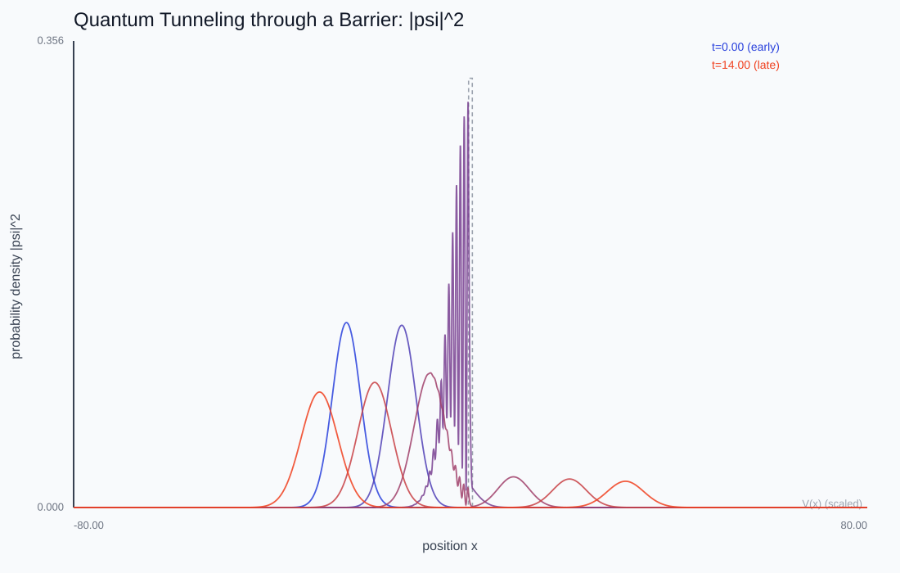
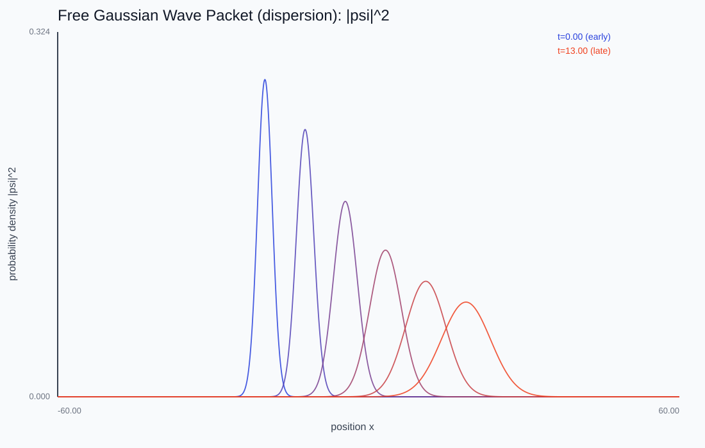
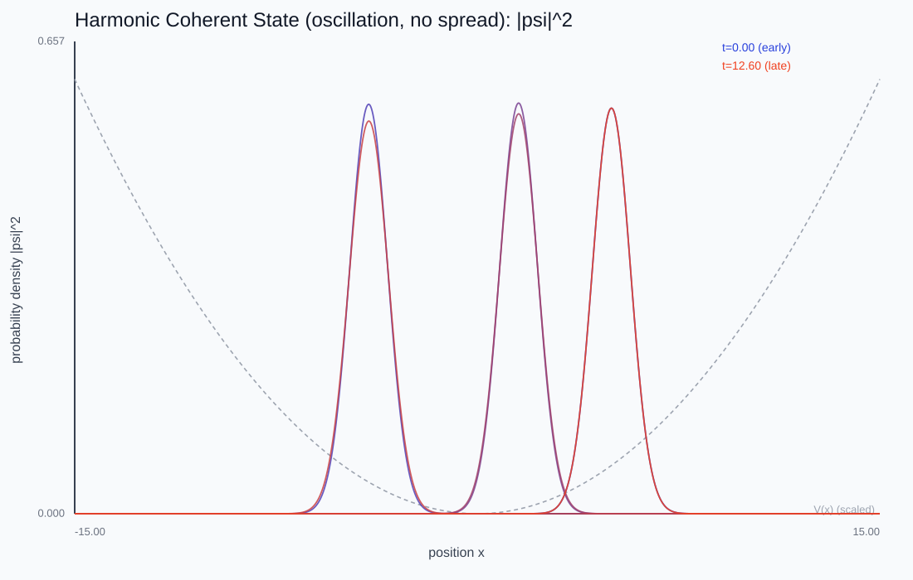
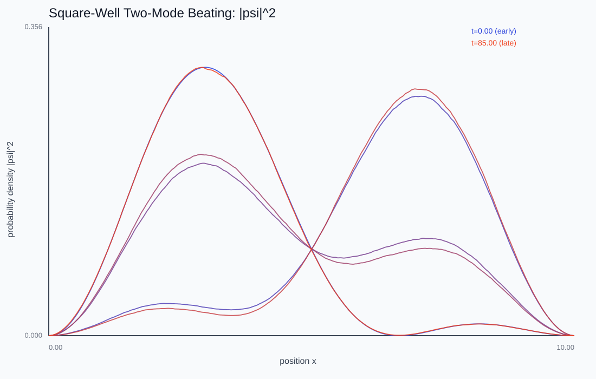

Schrödinger Wave Packets
Quantum mechanics replaces the particle with a complex wavefunction. What new phenomena — dispersion, coherent oscillation, tunneling — have no classical analogue?
A wave packet hits a barrier, evolved live with a unitary leapfrog scheme. Lower the barrier or raise the energy and the transmitted fraction climbs — quantum tunneling you can dial in.

Evolving a wavefunction
The 1D time-dependent Schrödinger equation i ∂ψ/∂t = Hψ with H = -½ ∂²/∂x² + V is discretized on the same grid and three-point second difference as the wave-equation labs — but now the field is a complex probability amplitude, and |ψ|² is a probability density.

Unitarity demands Crank-Nicolson
A quantum integrator must preserve total probability. Explicit Euler does not and the norm blows up. Crank-Nicolson averages the Hamiltonian over the step into a Cayley transform that is exactly unitary for any step size, so the norm — and, for static V, the energy — is conserved to round-off. The quantum echo of matching the integrator to the conserved structure.

Three irreducibly quantum effects
A free packet disperses (σ(t) grows) because its momentum components travel at different speeds. A coherent state in a harmonic well oscillates without spreading. A packet tunnels through a barrier taller than its energy, splitting into reflected and transmitted parts whose probabilities still sum to 1 — with transmission falling exponentially in barrier width. And two superposed stationary states beat at their energy difference: the quantum origin of spectral lines.

This chapter is drawn from the physics-lab study notes and renders. The longer write-ups and project essays live on the blog.